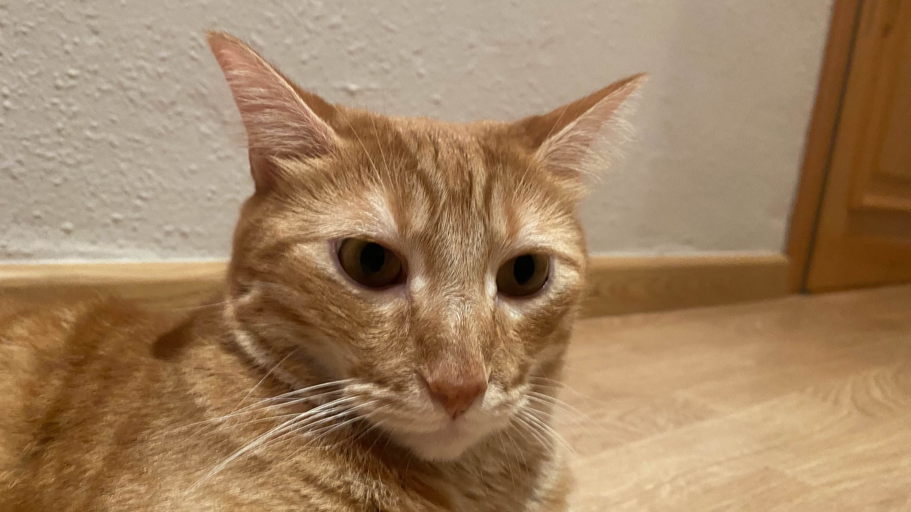
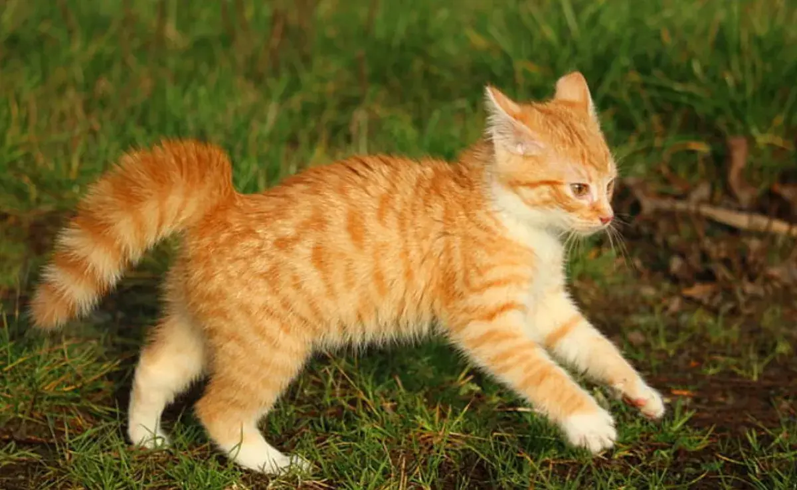

La página - Mi blog personal
Bienvenido a la página. Soy Pau, estudiante de ciclo de informática, y aquí es donde hablo sobre cosas que me gustan y donde tengo una página dedicada a fotos de gatos.
Pequeño índice de lo que contiene mi página.
Se puede acceder a los apartados de la página a través de la navbar situada en la parte superior de tu pantalla.
Sección de gatos
Un apartado dedicado a fotos y anécdotas de gatos, puede que más concretamente, de mis gatos.
Otros

En este apartado se hablará sobre las cosas que me gustan, desde obras (juegos, manga...) hasta música y comida.